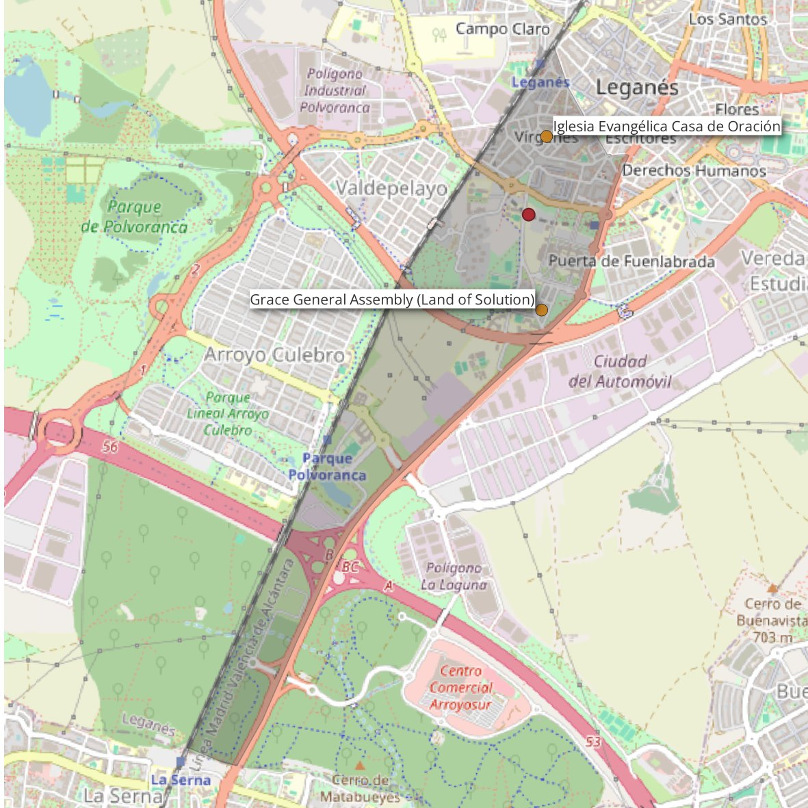
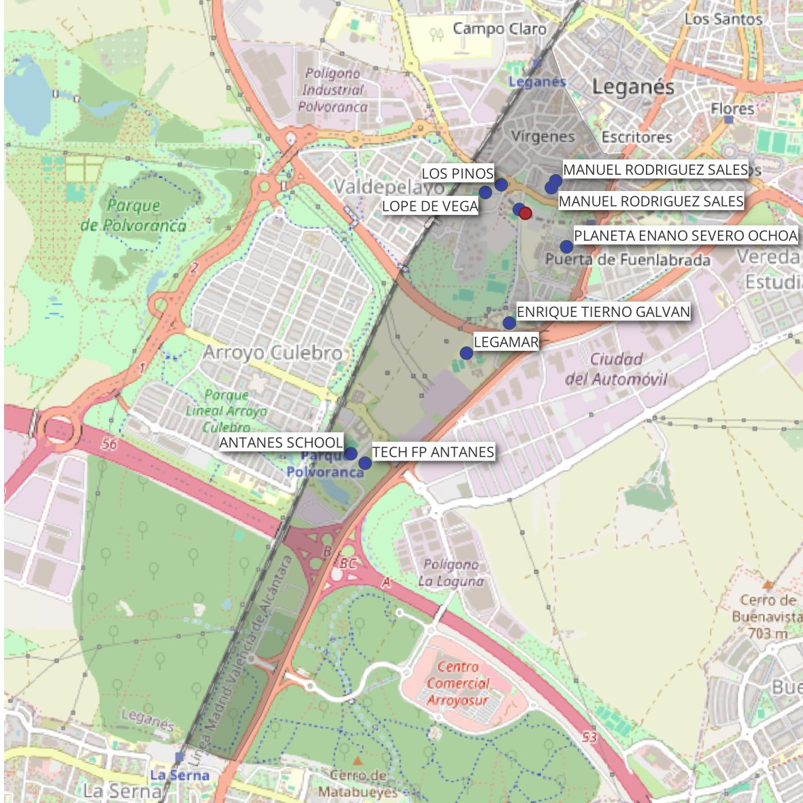

Puntos de interés en el territorio parroquial
Parroquia Nuestra Señora de la Salud (Leganés) · Arciprestazgo de Leganés
Entidades religiosas no católicas

2 entidades religiosas no católicas en el territorio de la parroquia.
Evangélicos (2)
- Grace General Assembly (Land of Solution)Calle Ancha 24 Bajo, Leganés
- Iglesia Evangélica Casa de OraciónCalle Seminario 6, Leganés
Fuente: Registro de Entidades Religiosas del Ministerio de la Presidencia, Justicia y Relaciones con las Cortes. Situación en el mapa: dirección geocodificada con CartoCiudad (IGN) o Nominatim (OpenStreetMap).
Centros educativos

10 centros educativos en el territorio de la parroquia (público: 6, privado: 3, privado concertado: 1).
| Centro | Tipo | Titularidad | Domicilio | Web |
|---|---|---|---|---|
| ANTANES SCHOOL | Centro privado de educación infantil, primaria y secundaria | Privado concertado | Calle Parla, 4 B, 28914 Leganés | Página web |
| ENRIQUE TIERNO GALVAN | Instituto de educación secundaria | Público | Calle Agustinos, s/n, 28914 Leganés | Página web |
| FRANCISCO DE QUEVEDO | Colegio de educación infantil, primaria y secundaria | Público | Camino de los Frailes, 6, 28914 Leganés | Página web |
| LEGAMAR | Centro privado de educación infantil, primaria y secundaria | Privado | Carretera LEGANES-FUENLABRADA, k1,5, 28914 Leganés | Página web |
| LOPE DE VEGA | Colegio de educación infantil y primaria | Público | Avenida de los Pinos, 4, 28914 Leganés | Página web |
| LOS PINOS | Escuela infantil-casa de niños | Público | Avenida de los Pinos, 2, 28914 Leganés | Página web |
| MANUEL RODRIGUEZ SALES | Escuela municipal de música | Público | Plaza Pablo Casals, 1, 28911 Leganés | Página web |
| MANUEL RODRIGUEZ SALES | Conservatorio profesional de música | Público | Plaza de Pablo Casals, 1, 28911 Leganés | Página web |
| PLANETA ENANO SEVERO OCHOA | Escuela infantil privada | Privado | Avenida Orellana, s/n, 28911 Leganés | Página web |
| TECH FP ANTANES | Centro privado de formación profesional específica | Privado | Calle Francisco Umbral, 2, 28914 Leganés | Página web |
Fuente: registro de centros educativos de la Comunidad de Madrid. Solo se recogen los centros de alta.